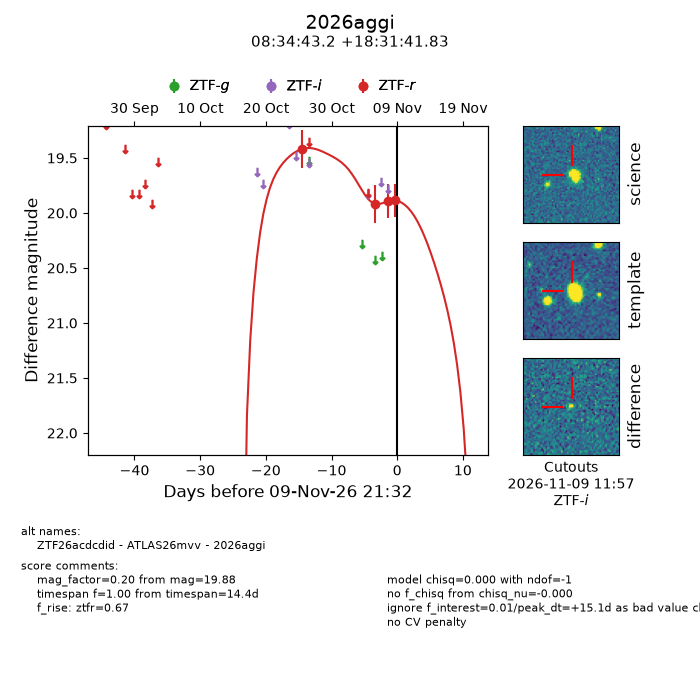
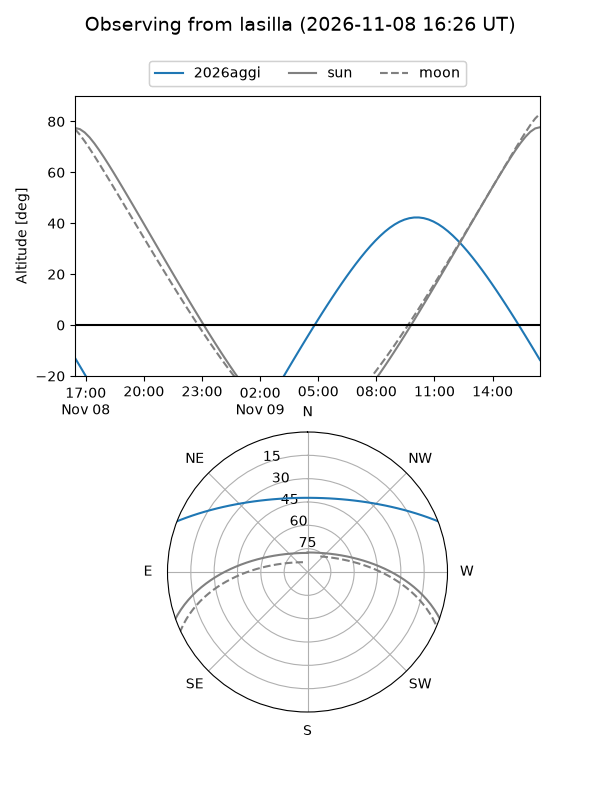
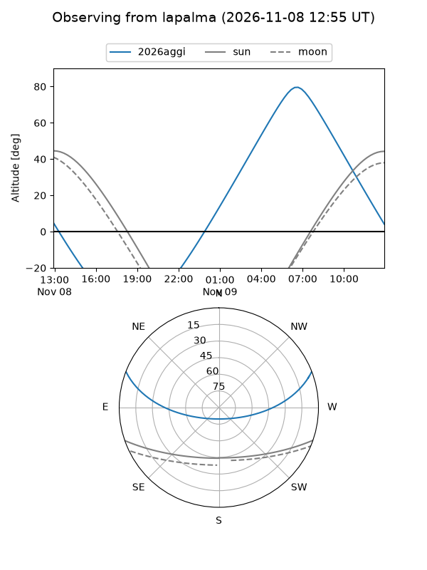
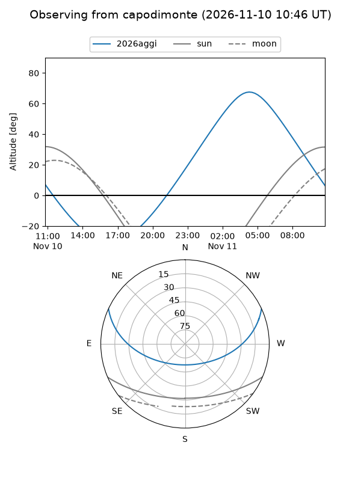
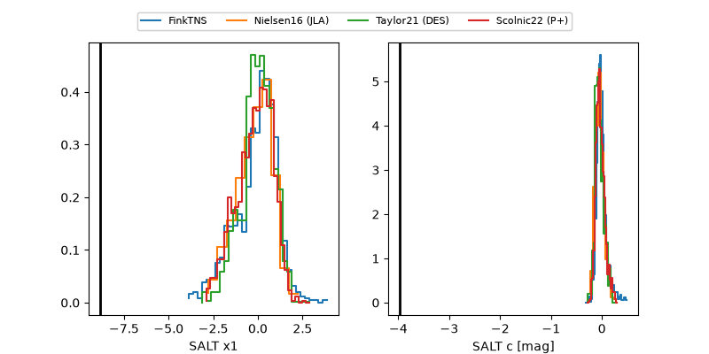

2026aggi
Target 2026aggi at 2026-11-09 21:34
Aliases and brokers:
FINK-ZTF: ztf.fink-portal.org/ZTF26acdcdid
Lasair-ZTF: lasair-ztf.lsst.ac.uk/objects/ZTF26acdcdid
ALeRCE-ZTF: alerce.online/object/ZTF26acdcdid
YSE-PZ: ziggy.ucolick.org/yse/transient_detail/2026aggi
TNS name: wis-tns.org/object/2026aggi
Direct TNS query: direct search
alt names
ZTF26acdcdid (ztf,fink_ztf)
2026aggi (tns,yse)
ATLAS26mvv (atlas)
Coordinates:
equatorial (ra, dec) = 128.6799,+18.52829
equatorial (HMS+DMS) = 08:34:43.17,+18:31:41.83
galactic (l, b) = (206.6136,+30.82667)
Flags:
peak dt: +15.1
Photometry:
last ztfr=19.88
4 ztfr detections
Lightcurve

Visibility



Additional plots
